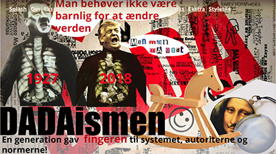

HTML, illustrator og flex
Jeg lavede faktisk min første 'professionelle' hjemmeside i 1996. København var kulturby og i den forbindelse lancerede vi projektet "third culture Copenhagen", hvor toppen af poppen indenfor videnskab og kunst skulle mødes på Holmen i København og inspirere hinanden. Det var næsten et krav fra videnskabsfolkene, at der skulle være en web site, hvor de kunne dele 'papers' og tjekke hinanden ud. Det var tekst, images og en hulens masse grafer - og kun html, som jeg hakkede mig igennem til nogenlunde tilfredshed fra brugerne.Så det er vel banalt sagt en ny verden for mig, at bruge InDesign, layout diagrammer, flex og css. Men på den totalt fabelagtige fede måde!
Opgaven
Her blev vi tildelt en stilart, men jeg havde nok næsten valgt dadaismen, hvis der havde været frit valg.Der var indlagt lidt gruppearbejde, der mest gav sig udtryk i fremlæggelse af stilarten, hvor jeg faktisk fandt det vældig fint, at vi også fik et lille perifert indblik i de stilarter, de andre grupper arbejdede med. Udover at få glimrende kendskab til dadaismen, fik jeg også et lille indblik i de andre stilarter via de medstuderendes glimrende oplæg og opgaver.
Min absolut stærkeste læring var her, at organisere mit materiale i et InDesign layout - og se, hvordan det herfra endte videre i et website - næsten uden afvigelser.
Link til opgaven:(tryk på foto)

Struktur
Især vil jeg fremhæve, at jeg er blevet bevidst om struktur på en helt ny måde, og kan nu i højere grad se værdien i at 'organisere' sine ideer, før man bare høvler tekst ind. Layoutdiagram er ikke bare brugbart til udførsel, men også til mindset omkring at skabe digitalt design.
Design
Uden at grave min egen grav (med dette portefolie), vil jeg seriøst mene, at jeg faktisk også har fået hældt en masse nye tanker og ideer på i forhold til desing.Hold samme farveskala - samme former og samme typografier - og igen - tænk dig om og planlæg FØR man bare forfatter løs.
Desktop
Mobil
Og skønt med det samme at tænke i både web og mobil løsninger!